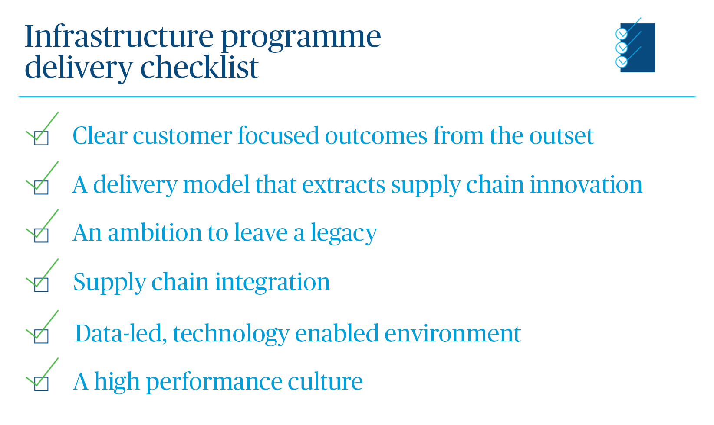

Enhancing performance: Outperforming baselines
A new take on infrastructure’s FAQs
Mark Savage
James Corrigan
Just as the proof of the pudding is in the eating, you only truly taste the success – or shortcomings – of a programme’s strategy and set-up in the implementation.
It is during the delivery phase that the concept of ‘performance’ becomes something tangible and often acutely evident.
Sadly, we are all too familiar with the consequences of poor performance. For 72 percent of our UK respondents, the most common impact is exceeding the budget, while for 69 percent it leads to projects or programmes being delivered late. And the sorry list of failings goes on – reputational damage for the organisation (46 percent), operational disruption (41 percent), higher costs to end users (41 percent) and poor-quality infrastructure (31 percent).
This study has explored how we can tackle these issues by focusing relentlessly on the real outcomes of infrastructure investment, underpinning this with a whole-life asset management strategy, and by setting up major programmes for success.
As we move into the delivery of these programmes, we need to ensure that this new way of working applies throughout. We need to be accountable for our performance and to respond to the key questions which matter to our stakeholders.
But we also need to assess our effectiveness through a wider lens. Here, we’ve proposed a new take on three of infrastructure’s frequently asked questions.
1. Are we on time and are we on budget?
This is possibly the first question on any politicians lips when they scrutinise infrastructure programmes. Too often, we’re not in a strong position to give good answers and we need to recalibrate. Have we set realistic and achievable baselines? And do we have the necessary information to assess our performance against them?
Setting the right baselines at the outset is crucial to ensure the programme team and supply chain have the opportunity and motivation to outperform them.
A realistic approach will help us to counter ‘anchor bias’, where stakeholders fixate on figures and deadlines which were set in the past, and ‘optimism bias’, where we set baselines working from a best-case scenario rather than more realistic probabilities. Unrealistic expectations can demotivate all parties.
Instead, we must be more proactive and positive. Baselines need to extend through scope, schedule and costs to reflect a more expansive view of what we are achieving – measuring delivery performance in areas such as quality, carbon, employment and skills, and operation.
But you can’t measure against a baseline without data and information.
Disappointingly, not even half of UK respondents (41 percent) agreed that better harnessing and harvesting of data would improve industry performance.
It’s no wonder therefore that key technological reasons for underperformance include incompatible systems (49 percent), poor visibility of data (48 percent) and unwillingness to share data (37 percent).
Clients need to set up their programmes to address this inertia and embed a data-driven culture at all levels.”
This starts with establishing a consistent, quality data collection approach, harnessing technology, and adopting standardised measures within and across all organisations supporting delivery.
Data must provide lead indicators of performance - we must become fixated on improving performance not on explaining results.
It’s not enough to assemble and analyse data – organisations need to have integrated decision-making processes in place which allow them to respond to that data in a timely manner, and the people, capability and the culture to capitalise on it.”
2. Is my supply chain performing?
A more expansive approach to setting and measuring baselines requires a different approach to supply chain engagement – after all, it’s members of the supply chain who will deliver these baselines.
If clients take a broader view of what success looks like, then the supply chain should have the opportunity to benefit when they contribute to that success. Traditional, transactional, contract focused relationships simply won’t deliver the change we need to transform industry performance.
A collaborative and inclusive approach is the best way to realise greater performance: partners should be viewed as an extension to the client organisation, engaging rather than transacting. This requires clients to understand and help and develop the supply chain’s capabilities, engage on challenges and together create a culture of continuous improvement. A deeper understanding of the supply chain will also help better connect clients with SMEs who are often the key innovators in delivery.
3. Are we leaving behind a positive legacy?
Legacy can mean many things – an asset we’re proud of, new skills and capability left within an organisation or industry or reducing the carbon we use.
When we talk about legacy in delivery we are speaking about the way in which we are improving how our industry works during the delivery of infrastructure assets. To initiate change – and fulfil the UK government’s Construction Sector Deal – we need to see the revolution of capability within the sector. We need to build a high-tech, high-performing industry – one which is the leading destination for top talent to enter.
We have certainly got a long way to go. In the UK, just 38 percent of respondents recognise that attraction of applied technology capability, including offsite construction understanding, would improve industry performance.
By adopting modern methods of manufacture, logistics and assembly and component-led design, we can radically improve delivery performance during the build phase. Infrastructure needs to learn lessons from other industries but will only do so through attracting talent from it. BMW can optimise the design and digitally print an individual screw – we need to do the same. This requires a sustained level of investment, commitment and consistency across the industry, driven forward by Government and our major clients.
Academia trade bodies and professional institutions need to collaborate and be at the centre of the war on talent to promote, attract and retain the talent our industry desperately needs.
A new checklist for a new era of infrastructure

Delivering world-class infrastructure today is judged by a much higher standard than it once was. To achieve the best outcomes, we need to be asking more of ourselves and our delivery models. We have a huge opportunity to start working in new ways as an industry – from setting better, more expansive baselines, harnessing the power of data to measure against them, incentivising supply chains to deliver outcomes and leading a technological revolution.
The major programmes of today need to deliver more than just infrastructure. They need to deliverable a sustainable future and an industry we can be proud of.
This article is part of 'Enhancing the performance of infrastructure programmes'
Go to the main page
James Corrigan
UK Head of Cost and Commercial Management, Infrastructure
e: [email protected]